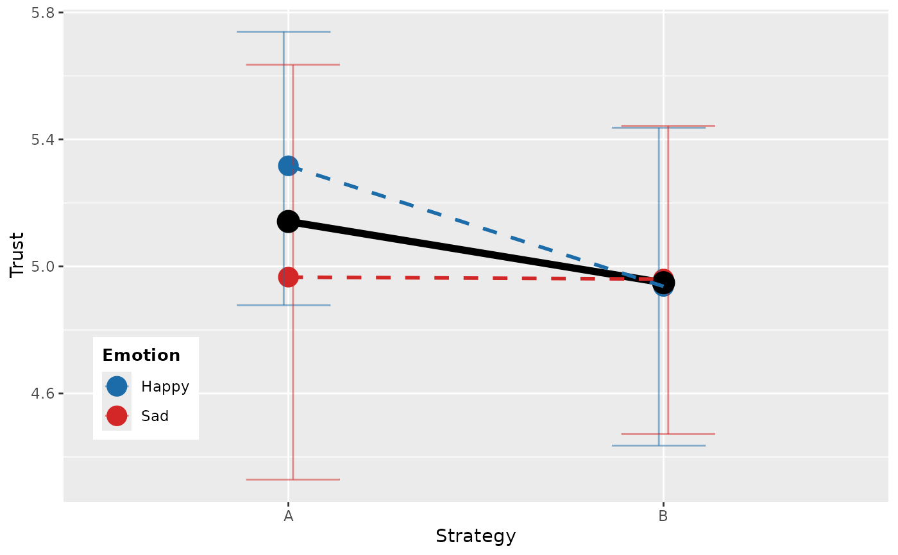

Function to define a plot, either showing the main or interaction effect in bold.
Source:R/plotting.R, R/zzz-aliases.R
generateEffectPlot.RdFunction to define a plot, either showing the main or interaction effect in bold.
Usage
generateEffectPlot(
data,
x,
y,
fillColourGroup,
ytext = "testylab",
xtext = "testxlab",
legendPos = c(0.1, 0.23),
legendHeading = NULL,
shownEffect = "main",
effectLegend = FALSE,
effectDescription = NULL,
xLabelsOverwrite = NULL,
useLatexMarkup = FALSE,
numberColors = 6
)
plot_effect(
data,
x,
y,
fillColourGroup,
ytext = "testylab",
xtext = "testxlab",
legendPos = c(0.1, 0.23),
legendHeading = NULL,
shownEffect = "main",
effectLegend = FALSE,
effectDescription = NULL,
xLabelsOverwrite = NULL,
useLatexMarkup = FALSE,
numberColors = 6
)Arguments
- data
the data frame
- x
factor shown on the x-axis
- y
dependent variable
- fillColourGroup
group to color
- ytext
label for y-axis
- xtext
label for x-axis
- legendPos
position for legend
- legendHeading
custom heading for legend
- shownEffect
either "main" or "interaction"
- effectLegend
TRUE: show legend for effect (Default: FALSE)
- effectDescription
custom label for effect
- xLabelsOverwrite
custom labels for x-axis
- useLatexMarkup
use latex font and markup
- numberColors
number of colors
Naming
plot_effect() is the spelling used throughout the documentation and
the one to prefer in new code: the report_* / plot_* / check_* prefixes
make the API discoverable through autocomplete.
generateEffectPlot() ![[Superseded]](figures/lifecycle-superseded.svg) is the original
name. Both names refer to the same function object, so they are entirely
interchangeable; the original remains fully supported and is not scheduled
for removal, and existing scripts keep working unchanged.
is the original
name. Both names refer to the same function object, so they are entirely
interchangeable; the original remains fully supported and is not scheduled
for removal, and existing scripts keep working unchanged.
Examples
# \donttest{
set.seed(123)
main_df <- data.frame(
strategy = factor(rep(c("A", "B"), each = 20)),
Emotion = factor(rep(c("Happy", "Sad"), times = 20)),
trust_mean = rnorm(40, mean = 5, sd = 1)
)
generateEffectPlot(
data = main_df,
x = "strategy",
y = "trust_mean",
fillColourGroup = "Emotion",
ytext = "Trust",
xtext = "Strategy",
legendPos = c(0.1, 0.23)
)

# }